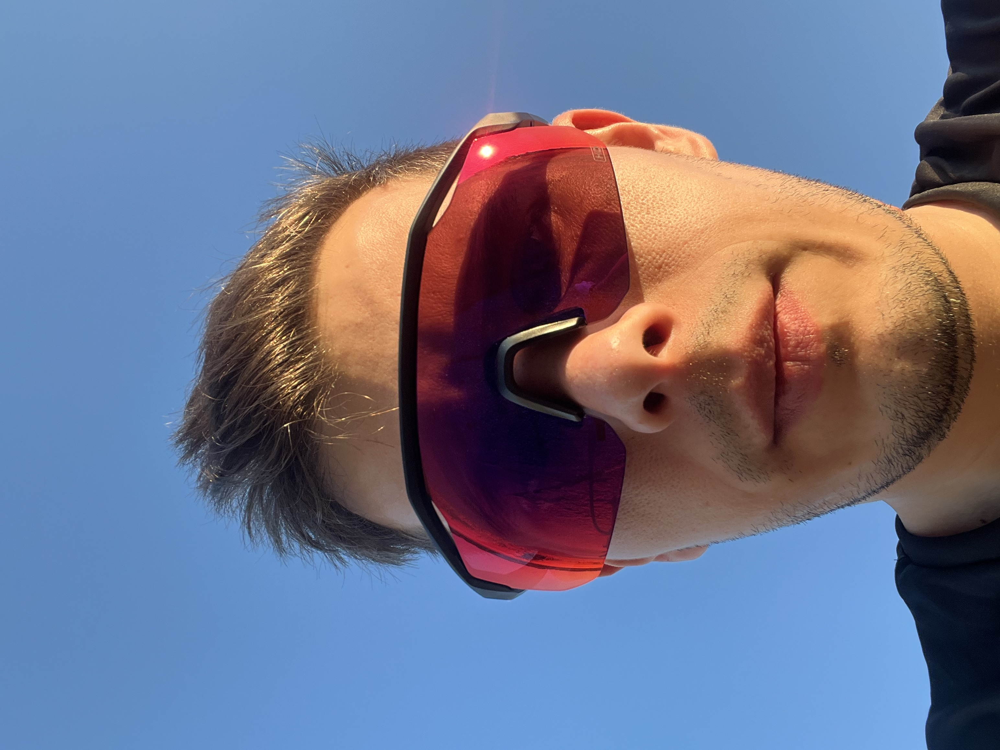

Szia, tekerj velem!
A nevem Endre, nagyjából 3 éve szerettem meg a kerékpározást, a munkahelyemnek köszönhetően. Azóta ha nem is rendszeresen, de szoktam kerékpározni és hosszabb-rövidebb távokat tekerni. Ezen az oldalon megosztom, hogyan indult ez az egész, melyik volt a kedvenc útvonalam, és mit érdemes tudni a bringázásról.
Hallgasd meg a bemutatkozásomat: